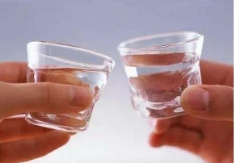

狐臭知识
-
预防后天狐臭有哪些方法呢
腋臭疾病的出现会给患者们造成很多不便的，严重的时候还可能给患者造成极大的心理压力，尤其是青少年们更加不利的。下面就... -

有狐臭的症状是什么?
腋臭为育龄女性高发病，在现在女性中是常见的一种的皮肤疾病，腋臭给女性身体带来了很大的不便，甚至影响到女性的正常交际... -
解析：狐臭对孩子的心理影响
就像大人经常会说小孩子没有腰，所以不可能腰痛一样，对待腋臭，很多家长也忽略了这种尴尬对孩子的影响。”造成孩子别扭心... -
腋臭是腋部流汗导致的吗?
狐臭作为一种尴尬的臭味，在夏天尤其横行，这是为什么呢?因为夏天流汗多吗?到底腋臭是不是流汗导致的呢?下面我们来看看... -
相爱相杀的油耳屎和腋臭，你知道多少？
你是不是有这样的困惑，油耳屎一定有腋臭吗?腋臭与油耳屎之间到底有什么联系? 油耳屎产生原因: 油耳屎是基因... -

喝酒会使您的狐臭更加严重
酒精具有很高的挥发性，会促使人排汗，排汗的次数增多，汗液也就更加粘稠，这也是导致酒精和狐臭的关系的原因了。在此提醒... -

狐臭竟然跟基因有关！
天气逐渐热起来，比起汗多来说，股臭似乎更加让人困扰。你又了解过狐臭么?狐臭是中国人的传统说法，在西医中，管这个叫做... -

“狐臭”与“油耳朵”真的有联系？
据了解：耳鼻喉科医生在门诊上会经常遇到油质耵聍的患者，外耳道内大量淡黄色油状分泌物堵塞。在给患者清理耵聍的时候，因... -

狐臭早期的症状有哪些?
生活中很多人都患有狐臭这种疾病，这些患者一旦和我们近距离接触，你会闻到一股很难闻的味道。为了更好地了解狐臭，更好的... -
狐臭为何青年女性居多
狐臭是发生在腋窝部一种特殊的难闻臭味，又称狐臭，医学上叫做汗臭症。人体皮肤中存在两种汗腺，一种叫小汗腺，它遍布全身... -
大人有腋臭，小孩的遗传几率有多大?
天热、运动量过大时，腋臭患者腋下难闻刺鼻的气味最易散发出来。如果小孩子有腋臭，他的同学可能经常笑话他、没人和他做朋... -

狐臭和年龄有什么关系？
狐臭的发生主要与大汗腺分泌有关。但是你知道吗?每个年龄阶段大汗腺的状态都是不同的，下面腋臭专家给大家做一下详细的讲... -
三大易患狐臭人群 你有没有中枪？
由于狐臭严重危害到了人们的生活、工作和学习，甚至导致人们的心理产生自卑感，从而变得沉默寡言，影响了正常的社交活动，... -
狐臭对患者的睡眠质量有影响吗?
狐臭会引起睡眠损害吗?这个问题具有很大的可伸缩性。因为人与人之间都有所不同，但是有一些狐臭患者可能有这个问题，一些... -
狐臭会传染？狐臭患者的衣物应合理处理
谁有狐臭TA用过的东西都不要用，不要离TA太近，不然会把狐臭传染给自己。如此伤人的话，狐友们是否听到过?狐臭真的会...